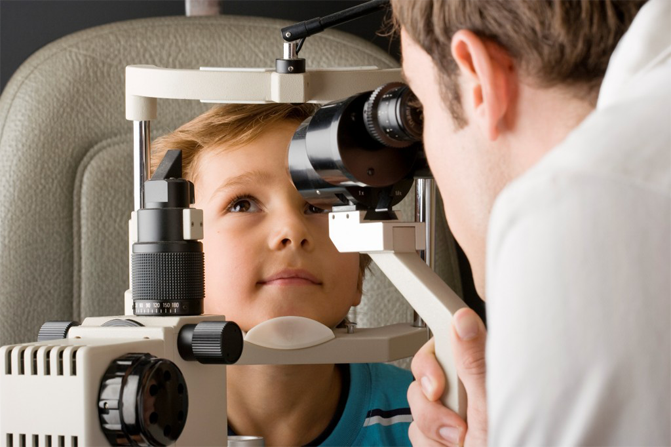

История о “Маленьком принце”
Здравствуйте, дорогие мамочки! На что мы только не идем, ради наших детей, чтобы они были здоровы и счастливы. Хочу рассказать вам мою историю, надеюсь, она поможет многим мамам. Выражаю благодарность моей подруге, мужу и доктору, которые помогли мне и моему сыну!
Итак, начну с того, что у меня есть сын, которого зовут Мотя, ему 7 лет. Считаю его очень умным мальчиком. Интересуется всем, чем только можно. Рано начал читать, в 5 лет читал по слогам, а в 6 самостоятельно читал книги. Когда Мотька пошел в 1 класс, мы не могли нарадоваться с мужем его стремлению учиться и познавать что-то новое. Приходим домой со школы, а он быстрее бежит в свою комнату, показывать нам, чему он научился.
Странная эта штука зрение! Никогда бы не подумала, что у ребенка, у
которого в родне никто не носит очки, может испортиться зрение. Что и случилось с моим малышом. Стала
замечать, что он жмурится, когда
куда-то смотрит. Трет глазки своими маленькими ручками.. Однажды, купила ему книгу “Маленький принц”.
Она
была такая красивая, а какие были иллюстрации - просто, не передать словами! Думала, точно ему
понравится. Но не тут-то было. Сказал “спасибо” и отложил книгу. Я решила с ним поговорить:
“Мотичка, что с тобой происходит?”
Долго молчал, ничего не говорил, а потом вижу, что слезки накатываются на глаза, и тонким таким тихим
голоском говорит мне:
“ Мамочка, мои глазки плохо видят, а когда я напрягаюсь, то у меня
начинает болеть голова.”
Сердце упало в пятки от услышанного. Говорю ему:
“Почему же ты мне раньше не сказал, мое солнышко?”
“Я боюсь, что вы заставите меня носить очки”
Какая же я глупая… В этой ситуации, можно винить только себя, я же видела все признаки плохого зрения и
проигнорировала это. Итак, надо было
действовать и срочно! Во-первых, я успокоила Мотю, умыла его личико и уложила спать. А во-вторых, я
позвонила
своей подруге, которая
работает в поликлинике и попросила ее договориться с врачом окулистом
о приеме. ( Спасибо большое тебе, моя родная, что бы я делала без тебя)
На следующий день, мы попали на прием к окулисту. Это был мужчина лет 55, может, старше. Приятный дядя, с седой бородой и в круглых очках, типичный Айболит. Обследовав Мотю, он сказал, что у него миопия, т.е. близорукость, и что она приобретенная. А это значит, что из-за чтения книг, большой нагрузки в школе, зрение начинало падать… Да уж… Не хотел Мотька носить очки, но видимо, придется. Отвела ребенка к мужу в коридор, а сама осталась с доктором, чтобы поговорить с ним.

“Доктор, что нам делать? Мой сын стесняется носить очки, по этой причине, он скрывал от меня, что плохо видит” “Прежде, перестаньте паниковать, в таком возрасте, как у Матвея, все лечится, если вовремя принять меры. И очки я вам не прописываю, так что, перестаньте волноваться, всё ваше волнение будет переходить на ребенка” После этого он приступил писать свои врачебные закарючки. Прописал он нам “D-vision”. В составе одни лечебные травы. Я обрадовалась, что не надо капать всякую химию в глазки моего мальчика.
Спустя неделю приема “D-vision”, Мотя стал бодрее, тяга к знаниям появилась снова! А через 2 недели мы пошли в нашему доктору Айболиту, который вместе с нами радовался, что зрение стало восстанавливаться! Вот это чудеса, скажу я вам! Ура, мы победили близорукость! Теперь “D-vision” всегда в нашем доме, потому что он еще и для профилактики полезен!
И в заключение хотела сказать, что Мотька прочитал “Маленького принца”, теперь эта его любимая книга! А да, кстати, внизу оставлю ссылочку на “D-vision”. Желаю всем счастья, взаимопонимания, любви и, конечно же, ЗДОРОВЬЯ.